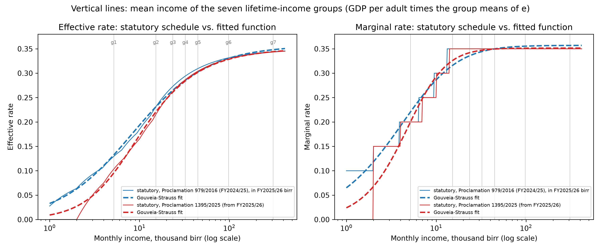

Taxes in OG-ETH#
The government is not an optimizing agent in OG-ETH. The government levies taxes on household income, corporate income, and value added. With these resources, the government provides transfers to households, spends resources on public goods, and makes rule-based adjustments to stabilize the economy in the long-run. The government can run budget deficits or surpluses in a given year and must, therefore, be able to accumulate debt or savings. The spending and debt parameters are discussed in Chapter Calibration of Macroeconomic Parameters. Taxes are discussed in this chapter.
Personal income taxes#
The government sector influences households through two terms in the household budget constraint (18)—government transfers \(TR_{t}\) and through the total tax liability function \(T_{s,t}\), which can be decomposed into the effective tax rate times total income. In this chapter, we detail the household tax component of government activity \(T_{s,t}\) in OG-ETH.
The total tax function, \(T_{s,t}\), is a function of personal income taxes, taxes on bequests, and wealth taxes. In the default calibration, wealth and bequest taxes are set to zero in OG-ETH. Personal income taxes follow Ethiopia’s statutory schedule, fitted with OG-Core’s Gouveia–Strauss functional form (tax_func_type = "GS"), so that the effective and marginal rates rise with income the way the law says they do; the next subsection explains how informality is handled so that these rates fall only on the formal, tax-compliant minority.
The statutory schedule as the tax function#
Ethiopia taxes employment income (Schedule A) with monthly brackets. Under Proclamation 979/2016, in force in FY2024/25, the first 600 birr a month were exempt and six brackets of 10, 15, 20, 25, 30 and 35 percent applied above 600, 1,650, 3,200, 5,250, 7,800 and 10,900 birr. Proclamation 1395/2025, in force from July 2025 (FY2025/26), raised the exemption to 2,000 birr and set five brackets of 15, 20, 25, 30 and 35 percent above 2,000, 4,000, 7,000, 10,000 and 14,000 birr (TaxDev). Capital income is taxed under Schedule D at flat rates, 10 percent on dividends and 5 percent on interest.
The model period is a year, and OG-Core evaluates its tax functions on annual income in currency units, converting the model’s income units with mean_income_data, the average income of the households the functions describe. We set it to GDP per adult in FY2025/26 birr — nominal GDP of 23,851 billion birr ([International Monetary Fund, 2026], Table 1) over about 67.7 million people aged 20 and over (World Bank population and age structure for 2024, grown one year) — about 353,000 birr. For each schedule, ogeth.macro_params.fit_gs_parameters computes the statutory effective and marginal rates over a log-spaced grid of annual incomes from 12,000 to 5 million birr and fits the three Gouveia–Strauss parameters by least squares; the fit tracks the schedule to within about 1.5 (2016) and 2.5 (2025) percentage points of the effective rate, with the 35 percent top rate as the asymptote. The first model period (FY2024/25) uses the 2016 schedule, its thresholds scaled up by nominal income growth per head between the two fiscal years (about 21 percent) so that they bite at the same real incomes in FY2025/26 birr; every later period uses the 2025 schedule. The same parameters serve as the marginal rate on labor income, and the marginal rate on capital income is the flat 10 percent dividend rate. Brackets are fixed in birr by law and eroded by inflation; the model is real, so they are treated as indexed.


Fig. 15 The two statutory employment-income schedules (thin lines) and the Gouveia–Strauss functions fitted to them (dashed), as effective and marginal rates over monthly income; the vertical lines mark the mean income of the seven lifetime-income groups.#
At the incomes of the model’s seven lifetime-income groups — from 0.18 to 10.5 times GDP per adult — the 2025 schedule’s effective rate runs from about 10 percent for the bottom quarter (were it taxed) to 33 percent for the 90th–99th percentiles and 34 percent for the top percent, against the flat 8.7 percent that the compliant groups faced under the previous linear calibration. That is why the compliance boundary below is now the free parameter: the statutory schedule applied to the two formal groups’ incomes would collect several times what the treasury actually receives.
Informality and tax noncompliance#
Ethiopia’s income tax reaches only a fraction of the population. About 85 percent of employment is informal (ILO, 2021), and the great majority of workers are self-employed in agriculture or small unregistered enterprises that never remit income tax. This is not a hole in the model’s output: OG-ETH’s macro calibration rests on national-accounts data, which already imputes informal activity into GDP, so the model contains the informal economy’s output, capital, and labour. What informality changes is the tax boundary — who actually remits the income tax that is owed. An earlier calibration missed this distinction, applying a single blended flat rate (a 3 percent effective and 20 percent marginal rate) to every household and thereby spreading Ethiopia’s income-tax burden evenly across an economy where, in reality, a small formal minority pays close to statutory rates and the informal majority pays nothing. That both misstates who faces which incentives and imposes a spurious work-and-saving wedge on the roughly 90 percent of households the income tax does not reach.
We therefore model informality as graded tax non-compliance by lifetime-income group, using the labor_income_tax_noncompliance_rate and capital_income_tax_noncompliance_rate parameters (a value of 1 means none of the tax owed is remitted, 0 means full compliance). Lifetime income serves as a proxy for formality: the seven lifetime-income groups carry population weights of 25, 25, 20, 10, 10, 9, and 1 percent, and the shape of compliance across them is [0, 0, 0, 0, 0, 0.5, 1] — the bottom five groups, 90 percent of households and close to the ILO’s 85 percent informal-employment share, remit none of the income tax the schedule implies; the sixth group, partly-visible higher earners, remits half as much as the top group; the top 1 percent the most. Labour and capital noncompliance are set equal, and every group is still treated as a filer (income_tax_filer = 1): informality here is non-remittance, not non-filing.
With the statutory schedule as the tax function, the level of compliance is what the revenue data identify. The schedule’s effective rate on the two formal groups is 33–34 percent, and applied to their incomes in full it would collect about 5.5 percent of GDP, four times the 1.4 percent of GDP the treasury actually receives (IMF Selected Issues Paper 2025/108, = Country Report 25/189, para 9, average of FY2021/22–2023/24). So the compliance shape is multiplied by a scale, COMPLIANCE_SCALE, calibrated by the steady-state matching (python -m ogeth.calibrate) so that personal income tax collects 1.4 percent of GDP in FY2024/25; it comes out at about a fifth, meaning the top percent remits about a fifth, and the sixth group a tenth, of what Schedule A would take from their total income. That is not implausible: Schedule A reaches wage and salary income, while the top of Ethiopia’s income distribution is business, professional and rental income taxed — or not — under other schedules, and the WID top shares include capital income. The effective average income-tax rate then rises across the distribution from zero for the bottom five groups to about 3 percent for the sixth and 7 percent for the top, against the flat 3 percent on everyone of the calibration before informality was modeled.
Several of these choices are judgment calls, stated plainly: lifetime income is a proxy for formality, not sector of work, so high-income informality can only be represented as partial compliance; the sixth group’s half-of-the-top compliance is a judgment, sensitivity-tested and macroeconomically minor; there is one economy-wide wage and no formal/informal choice margin, an OG-Core structural limit; and compliance is a proxy for the fiscal footprint of the formal sector, not a model of the choice to be formal.
In the history-anchored baseline compliance stays at this FY2024/25 calibration throughout, so personal income tax grows only with the tax base (Two baselines: history-anchored and program). In the program scenario compliance moves along the transition, because the IMF program’s revenue gains are direct-tax heavy: in the first nine months of FY2025/26 federal direct taxes grew 78 percent against 41 percent for domestic VAT and 5 percent for import taxes ([International Monetary Fund, 2026], p. 15), the signature of a broadening tax base rather than of higher rates. The scenario therefore lets the formal tax boundary move down the income distribution over the seven program years, FY2024/25–FY2030/31: the sixth group’s compliance rises linearly to the top group’s and the fifth group’s from nothing to a fifth of it, and both then hold, so the compliance shape goes from [0, 0, 0, 0, 0, 0.5, 1] to [0, 0, 0, 0, 0.2, 1, 1], each date multiplied by the calibrated scale. This adds about a point of GDP of personal income tax by FY2030/31; the rest of the program’s revenue gain is carried by the consumption-tax rate and corporate-tax collections (The program scenario: the program path and the transition). The bottom four groups — 80 percent of households — stay entirely outside the income tax: the program formalizes the margin, not the mass of self-employed agriculture. The paths are built by ogeth.macro_params.program_compliance_paths (the baseline’s flat path by history_compliance_paths) and pinned by tests/test_fiscal_program.py.
We model payroll taxes as a flat 3% rate. Ethiopia’s statutory pension contribution is 18 percent of covered salary (11 percent employer + 7 percent employee, per this PwC summary), but that rate applies only to permanent employees of the formal public and private sectors covered by the two social-security agencies (POESSA and the public-servants scheme). In an economy where the great majority of workers are self-employed in agriculture or the informal sector, formal-pension coverage is only a single-digit-to-low-teens share of the labour force, so the economy-wide effective payroll rate — statutory rate times the covered share of the wage bill — is far below 18 percent. We set it to 0.03. The relevant weight is the covered share of the wage bill, not of headcount: covered formal employees (public servants and large-firm private workers) earn well above the mean wage, so a headcount coverage near 8–10 percent corresponds to a larger ~15–17 percent share of taxable wages, i.e. \(0.18 \times \sim0.17 \approx 0.03\). An earlier calibration applied the full 18 percent economy-wide, which (with no offsetting pension benefit, since the benefit-formula parameters are zero) overstated tax revenue by roughly five percentage points of GDP; see the steady-state validation in Calibration of Macroeconomic Parameters.
Public pensions#
The public pension is now in the model as a defined-benefit scheme with Ethiopia’s rules. Both schemes — the public servants’ (Proclamation 1267/2022, administered by PSSSA) and the private organizations’ employees’ (Proclamation 1268/2022, POESSA) — retire workers at 60 after at least ten years of service and pay 30 percent of the average salary of the last three years plus 1.25 percent for every year of service beyond ten, up to 70 percent (ISSA/SSA program descriptions); a career from 20 to 60 earns 67.5 percent. OG-Core’s Defined Benefits system pays yr_contrib × alpha_db times average earnings over the last avg_earn_num_years years, so we set retirement_age = 60, yr_contrib = 40, avg_earn_num_years = 3 and alpha_db = 0.675 / 40.
Coverage is the binding fact. PSSSA had 1.67 million contributors in 2020 and POESSA 2.3 million registered members in 2023, but only about 58,000 POESSA pensioners and roughly 800,000 pensioners in all; the ILO puts participation at under two percent of the working-age population, and pension outlays are about half a percent of GDP ([International Monetary Fund, 2026]). In the model the formal groups are the sixth and seventh lifetime-income groups — 10 percent of households and 40 percent of labor income — so paying them the statutory replacement rate would cost several times what the schemes pay. replacement_rate_adjust therefore keeps the formality shape [0, 0, 0, 0, 0, 0.5, 1] and is scaled by PENSION_COVERAGE_SCALE, calibrated by the steady-state matching (python -m ogeth.calibrate) so that pension outlays are 0.5 percent of GDP; the scale stands for the fraction of each formal group that is actually enrolled. Because the scheme now pays the pensions, the cash-transfer ratio \(\alpha_T\) in Calibration of Macroeconomic Parameters is 0.5 points of GDP lower than the IMF’s cash-transfer line along the program and the transfer allocation eta no longer carries a pension slice. The payroll contribution stays at its 3 percent economy-wide effective rate, since OG-Core’s payroll tax cannot vary by group; the formal groups’ contributions are therefore understated and the informal groups’ overstated by the same amount, a limit worth keeping in mind when reading the model’s pension balance.
Corporate income taxes#
OG-ETH uses the statutory rate of 30% for the corporate income tax rate. Because informal and exempt firms mean corporate collections fall well short of what the statutory rate applied to the whole capital stock would imply, the effective corporate tax is scaled by adjustment_factor_for_cit_receipts (together with c_corp_share_of_assets). We set this factor to 0.327, chosen so that corporate income tax collects 1.71 percent of GDP against a 1.7 percent anchor (IMF Selected Issues Paper 2025/108, para 9); the previous value of 0.2 was undocumented and under-stated collections. Modelled direct taxes then total 3.10 percent of GDP, matching the 3.1 percent reported for FY2024/25 (IMF Country Report 26/20, Table 2b).
Value-added taxes#
An effective consumption-tax rate of 6% is applied with the tau_c parameter. Ethiopia’s statutory VAT rate is 15 percent (unchanged under VAT Proclamation 1341/2024), but the effective rate on aggregate consumption is far lower because of exemptions, a large informal and subsistence economy, and incomplete compliance. In FY2024/25 domestic indirect taxes plus import duties and taxes were about 4.3 percent of GDP against private consumption of about 81 percent of GDP (a roughly 5.3 percent effective rate), per the World Bank Inclusive Growth DPO Program Document (May 2026) and World Bank WDI. We set \(\tau_c = 0.06\), slightly above the FY2024/25 realized rate, reflecting the ongoing broadening of the consumption-tax base (a 30 percent fuel excise effective December 2025 and the VAT base-broadening under Proclamation 1341/2024).